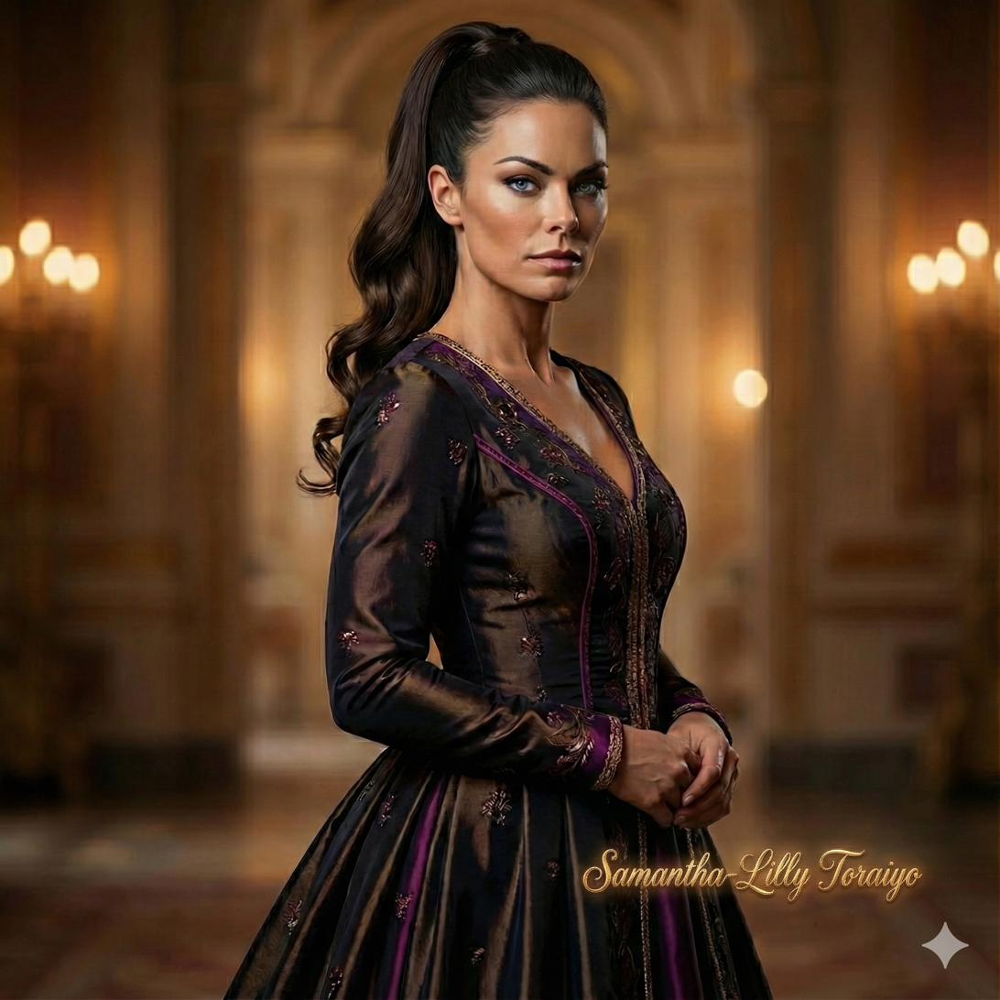
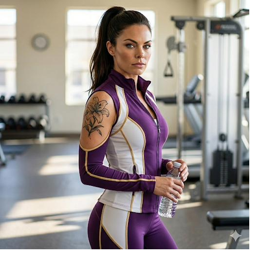
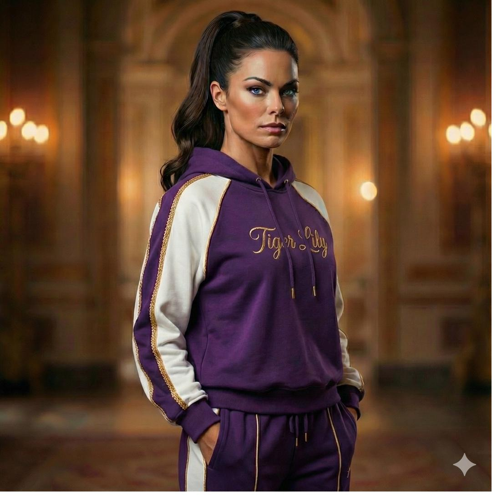

The Lost Prince — Character Encyclopedia
Royal House Locsird · Toraiyo
Samantha-Lilly
Toraiyo
Warrior Princess · Twin of Ayravelle · Elite Swordmaster
Elite Swordmaster
Tournament Fighter
Apex
Age 42
Fierce, disciplined, competitive. Her hardness toward Lessio is canon — not protective concern. The reflex to protect him still exists. It exists alongside the strain. Both are real, and neither cancels the other.
Skill
Elite Swordmaster · Top-Tier Tournament
Abduction Day
Nearly killed · Survived
◆ ◆ ◆
I.Personality & Character
Fierce. Disciplined. Competitive. Sam carries the day of the abduction in her body in a way most of her siblings do not — she was nearly killed, left bleeding in a pool of her own blood, muttering that Sapphire had taken the baby while she struggled to stay conscious. Mez-tah woke first and found her. If Jonzhento and Sonya-Lee had not arrived when they did, Sam would have died.
The trauma has left her strained with Lessio. Her hardness toward him is canon — it is not protective concern wearing a harsh mask. The strain and the protection reflex coexist in her without resolution. She is close with Jonzhento in a way that has its own distinct character. Of the non-War Maker sisters, she is second only to herself — she is the standard everyone else measures against.
She holds a quiet soft spot for Aurea-Lee — expressed only through restraint, never warmth. Aurea is one of the only people who can plead with Sam to stop, and sometimes Sam will.
◆ ◆ ◆
Battle · Full Armor
Gold and imperial purple — the Royal House colors in battle register. She wears them even here. The crown is identity, not ceremony.

Formal
The Warrior Princess in formal register. The discipline reads even at rest.

Athletic
Top-tier tournament fighter. The training is constant and real.

Domestic · At Rest
The hard edges at minimum. She does not disappear — she simply costs less in this register.
◆ ◆ ◆
Lessio Locsird
Brother · Strained · Protection Reflex
Her hardness toward him is not concern in disguise. It is the product of trauma that has not resolved. The protection reflex from his infancy still exists — fast and decisive, it surfaces without thought. Both things live in her simultaneously and neither cancels the other.
Ayravelle Locsird
Twin · Close · Tensions Over Lessio
The twin bond is real and close. The tension over Lessio is also real. Ayravelle does not let it pass without response. They navigate this — two deeply bonded people who do not agree about the most important person currently in their household.
Mez-tah Toraiyo
Sister · The Shared Scar
They are the only two who know exactly what those final minutes looked like. The eye contact when Mez woke up is the totality of what was ever communicated between them about it. Both know. Both know the other knows. It sits underneath their general dynamic permanently.
Jonzhento Locsird
Father · The Close Dynamic
Close with her father in a way that has its own distinct register from his relationships with her other siblings. Her hard edges meet something in him that does not require her to soften them.